Префектура Исикава · Комацу · сакэ
Сакэ Комацу: мастер Наохико Ногути в горах Канконоси, каменные склады и сакэ на диких дрожжах
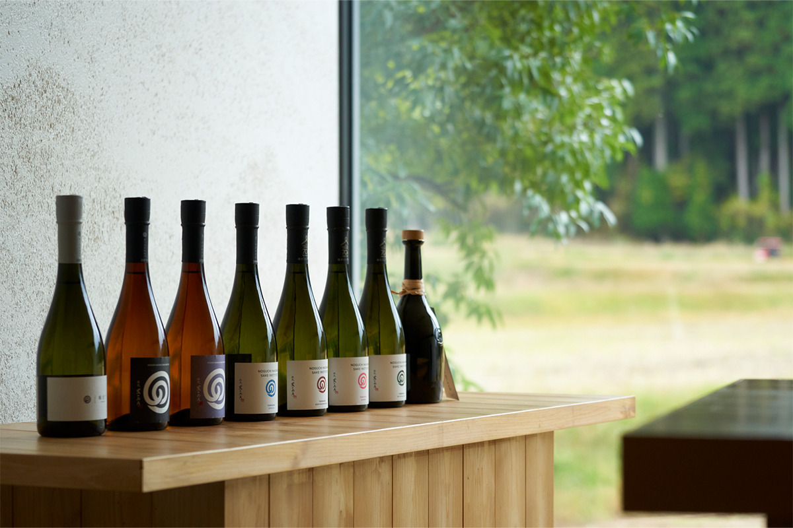
Исикава с её холодными зимами, чистой водой с горы Хакусан и хорошим рисом варит сакэ ещё с периода Муромати (XIV–XVI века). В городе Комацу на юге префектуры работает мастер, которого в Японии называют богом сакэ, а рядом две старые семейные сакэварни, которые делают сакэ только из местного сырья.
Мастер
Наохико Ногути: бог сакэ из Канконоси
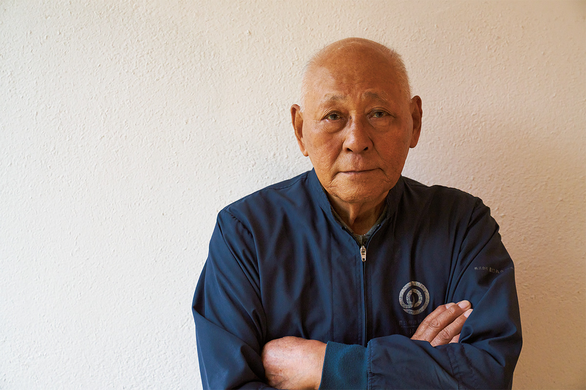
Наохико Ногути пришёл в сакэ в 16 лет, а в 1961 году стал тодзи, главным мастером сакэварни. Для такой должности это необычно рано. Он сделал «Кикухимэ» одной из самых известных марок страны и проработал там до 65 лет, а потом перешёл на сакэварню «Кано сюдзо», и её марка «Дзёкигэн» почти сразу стала популярной. Вкус «Дзёкигэн» тогда изменился так резко, что об этом много говорили.
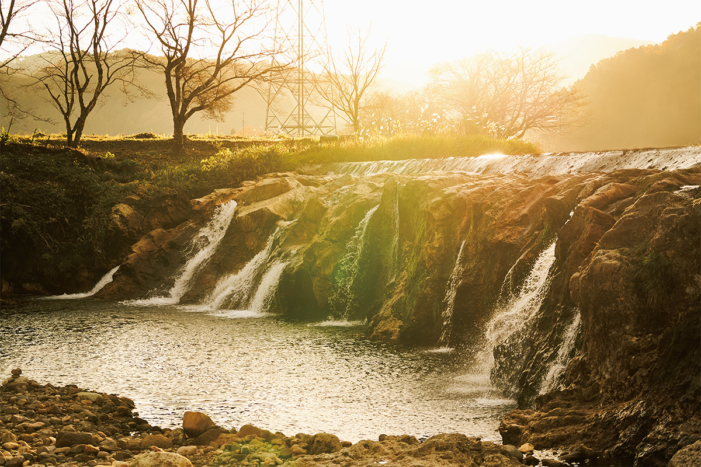
Его лаборатория, Noguchi Naohiko Sake Institute, стоит в Канконоси, горной деревне в окрестностях Комацу. «Лабораторией» её назвали нарочно: здесь мастер передаёт своё дело следующему поколению. Цех чистый до красоты. На стене висит огромный портрет мастера и рядом его слова: «Хочу делать сакэ, от которого вздыхаешь: ах, как вкусно».
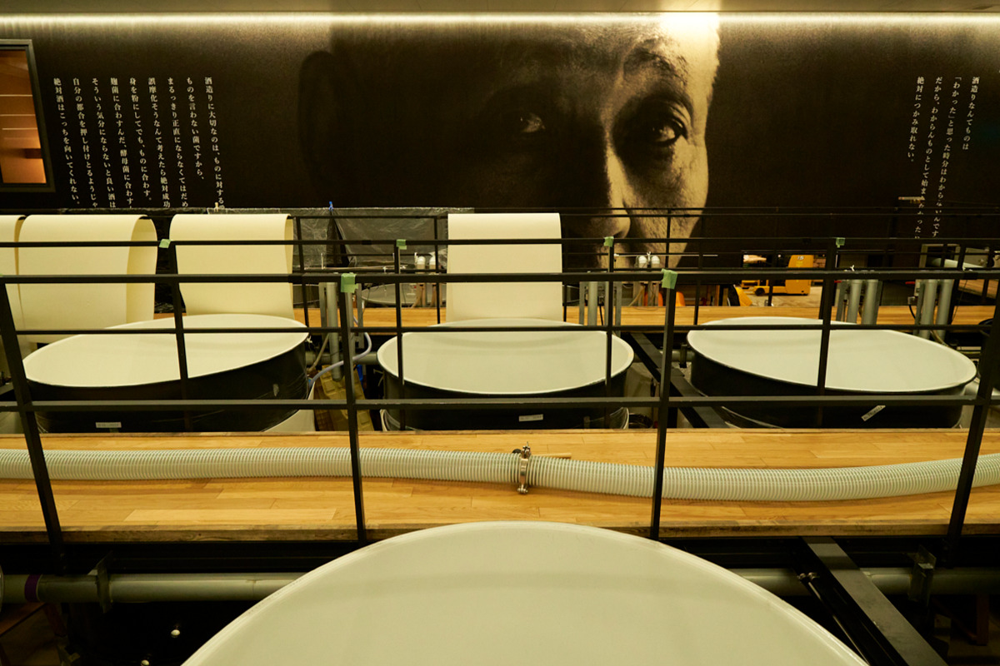
«Делать сакэ, которое каждый назовёт вкусным, вот с чего начинается работа мастера»
Наохико Ногути
В лаборатории есть и галерея. Ногути родился в третьем поколении семьи тодзи, и здесь в хронологии и историях рассказана вся его жизнь в сакэ: в 2022 году ему было 89 лет, и он продолжал работать. В галерее лежат его рабочие тетради, и по ним видно, что сакэ Ногути держится и на чутье, и на цифрах.
«Через двадцать дней почти всё забываешь. По одной температуре рисового солода не поймёшь, что происходит. Вот я и начал записывать, что делал с одним, что с другим: потом пригодится»
Наохико Ногути
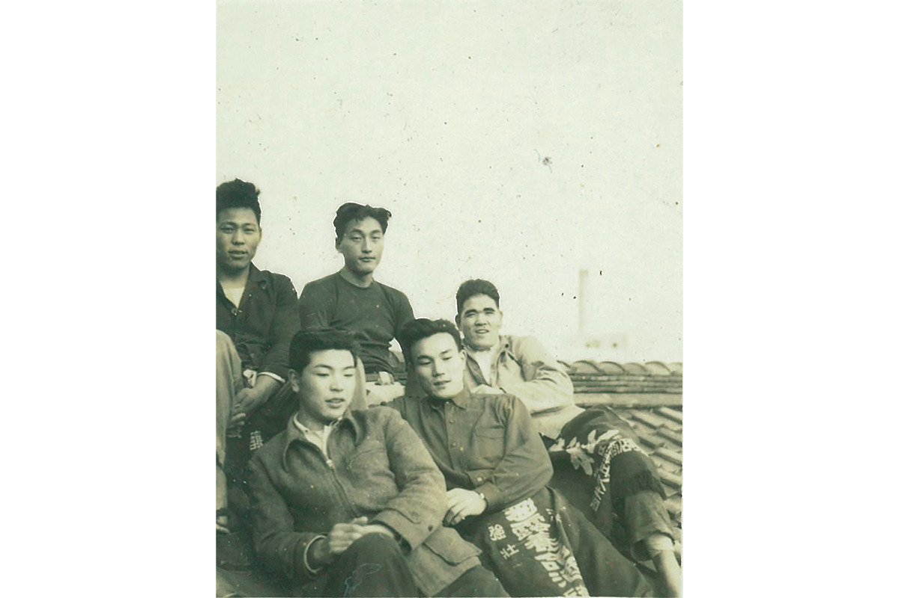
По его словам, он каждый день читает научные статьи. А ещё пробует пропаренный рис: «Когда ешь, многое понимаешь. Слишком ли он влажный, какой твёрдости в это время года, не подсушить ли ещё».
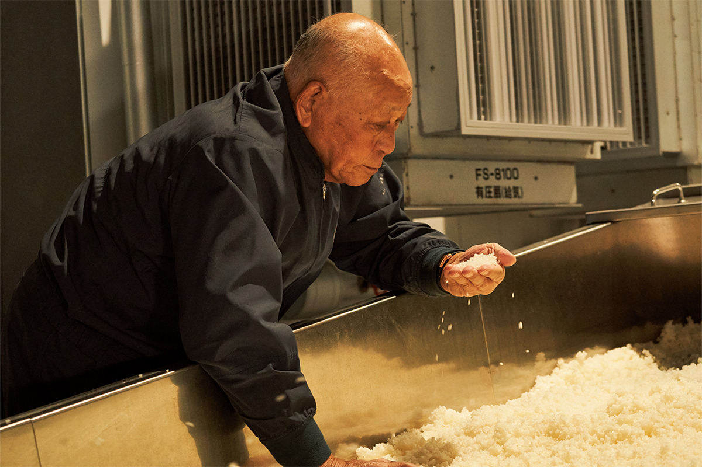
Восемь работников цеха двигались в такт его команде «Всё, хватит!» и шуму оборудования, и со стороны это было похоже на спектакль. Сакэ варят полгода, с осени до зимы, и всё это время мастера живут при сакэварне. «Время варки должно быть ограничено. Без чёткого ритма нельзя», говорит Ногути. На вопрос, когда он понял, как делать сакэ, он ответил так:
«Рис и всё остальное меняется каждый день. Как работать с тем рисом, что у тебя в руках? Иностранцы хотят сакэ к еде, значит, гиндзё нужно менять так-то. Поэтому „понял“ я не скажу никогда»
Наохико Ногути
Дегустация
Зал «Тоан»
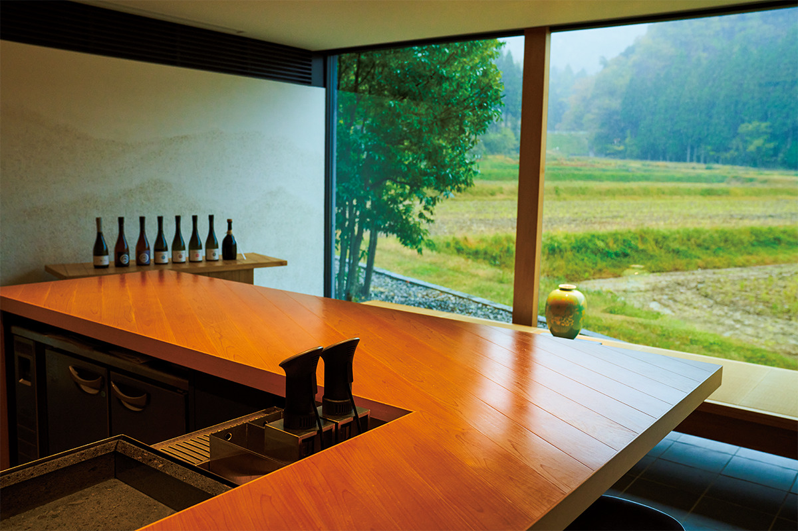
Попробовать сакэ лаборатории можно в дегустационном зале «Тоан» по предварительной записи. В 2023 году дегустации проходили три раза в день, по 60 минут и не больше чем на 8 человек, а наборов было три, каждый за 2000 иен с человека. Самые дорогие бутылки в 2023 году стоили 35 000 иен.
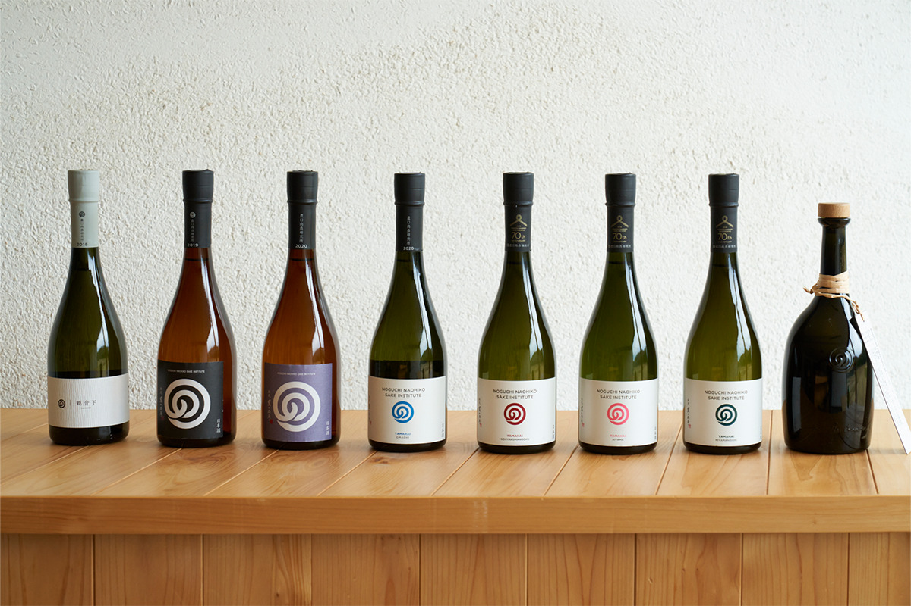
Noguchi Naohiko Sake Institute, дегустационный зал «Тоан»
- Адрес
- префектура Исикава, Комацу, Канконоси-мати, Ва 1-1
- Телефон
- +81 761-41-1227 (запись на дегустацию с 10:00 до 17:00)
- Часы работы
- дегустации в 11:00, 13:00 и 15:00, по 60 минут, до 8 человек
- Выходные
- среда
- Цены / Вход
- три вида дегустации, 2000 иен с человека (2023 год), подробности при записи
- Как добраться
- около 20 минут на машине от станции Комацу, около 30 минут от аэропорта Комацу
Камень
Higashi Sake Brewing: всё из Исикавы
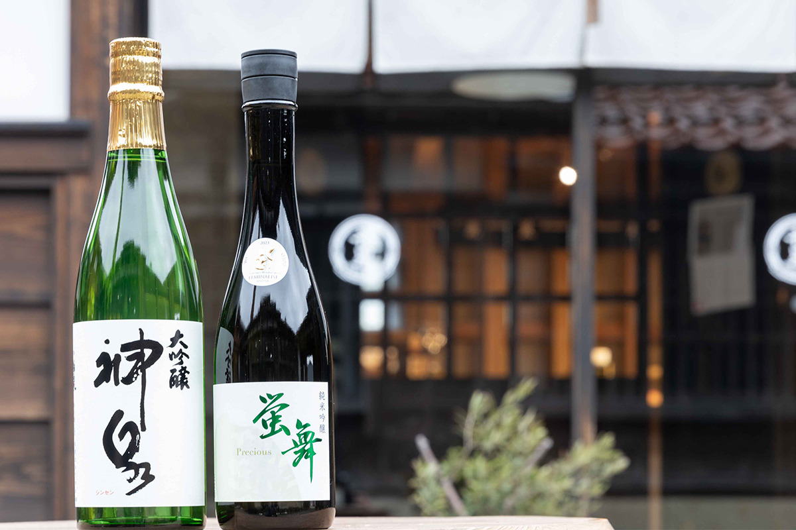
В марте 2024 года линию синкансэна Хокурику продлили, и до Комацу стало проще добраться. Сакэварню Higashi Sake Brewing основали в 1860 году, и здесь всё, из чего делают сакэ, берут в Исикаве. Сакэ хранят в каменных складах кура, построенных из камня Канконоси, той самой горной деревни, где работает Ногути. Эти склады внесены в государственный реестр культурных ценностей.
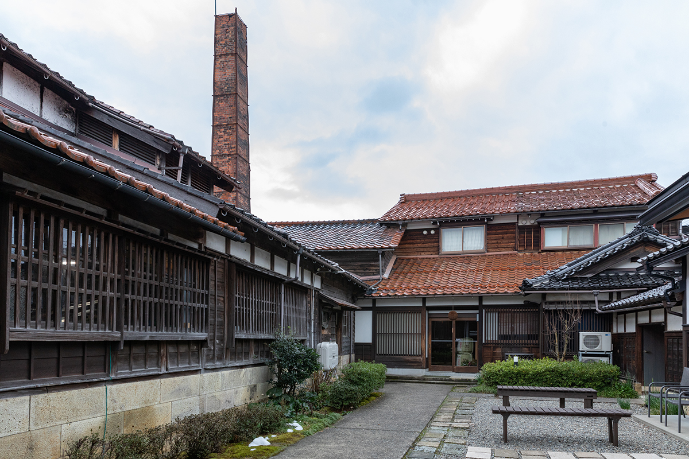
Главная марка сакэварни «Синсэн». Рис для сакэ берут местный, дрожжи канадзавские. В 2010 году сакэварня первой в префектуре попробовала делать сакэ из риса косихикари «Хотару-маи», который растят только в одном небольшом районе. Так появилась серия «Дзюммай сидзэнсю Хотару-маи», и она стала популярной.
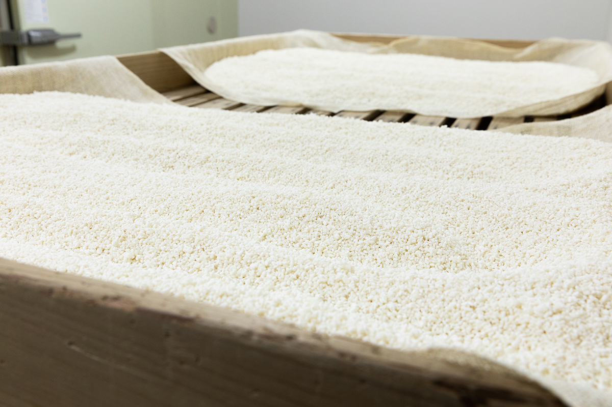
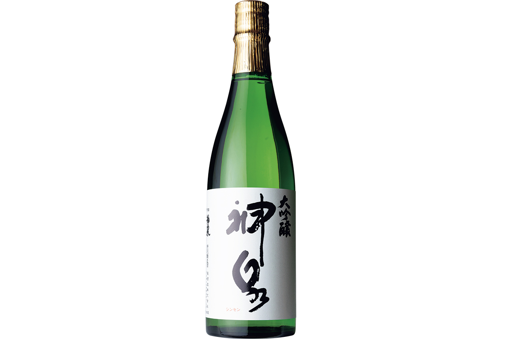
Сакэварня работает и с местными фермерами. Их ямада-нисики по качеству не уступает рису из Хёго, самого известного района этого сорта, и «Синсэн дзюммай гиндзё Blue Label» из него два года подряд получал награды на французском конкурсе сакэ Kura Master. Глава сакэварни в седьмом поколении хочет, сохраняя традицию, делать сакэ к еде, которое понравится и тем, кто только начинает его пробовать. К десятилетию «Хотару-маи» здесь сделали HOTARUMAI POMME, и это сакэ получило золото на французском конкурсе Féminalise, где судят женщины, специалисты по вину.
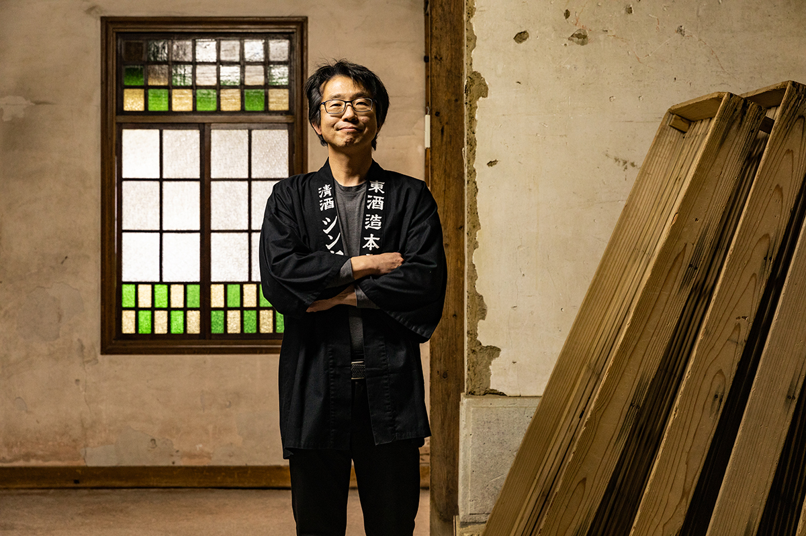
Higashi Sake Brewing, магазин «Синсэн исигура хонтэн»
- Адрес
- префектура Исикава, Комацу, Нода-мати, Тэй 35
- Телефон
- 0120-47-2302
- Часы работы
- 9:00–18:00
- Выходные
- воскресенье
- Цены / Вход
- экскурсия по сакэварне по предварительной записи
Ученик
Nishide Shuzo: сакэ на диких дрожжах
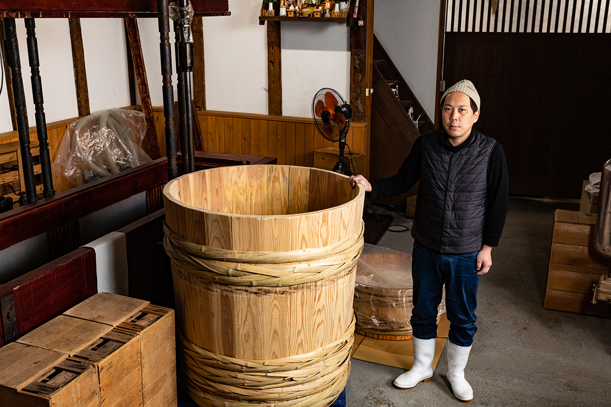
Главная марка Nishide Shuzo называется «Харугокоро». Тема этой сакэварни жизнь в согласии с природой, и всё сырьё здесь местное. Когда Хирохиса Нисидэ, глава и мастер сакэварни в пятом поколении, учился в средней школе, дела семьи пошли плохо, и сакэварня перешла к другому владельцу. Тогда он пообещал отцу, что когда-нибудь они вместе снова будут делать «Харугокоро». Ради этого обещания он бросил университет и пять лет учился у Наохико Ногути. В 2014 году он выкупил сакэварню и снова начал варить сакэ.
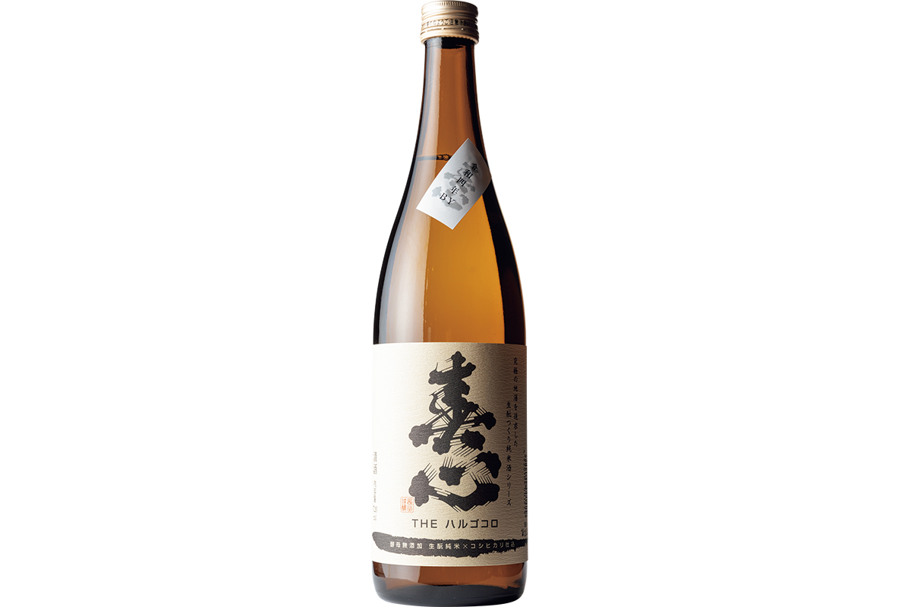
Дрожжи в «Харугокоро» не добавляют: брожение идёт на диких дрожжах, которые живут в самой сакэварне, и на природных молочнокислых бактериях.
«Всё делаем руками и долго, как будто варим рисовый бульон даси и собираем из него вкус. Мы зависим от природы, поэтому вкус каждый год другой. Пусть люди пробуют „Харугокоро“ этого года и представляют себе здешние места»
Хирохиса Нисидэ
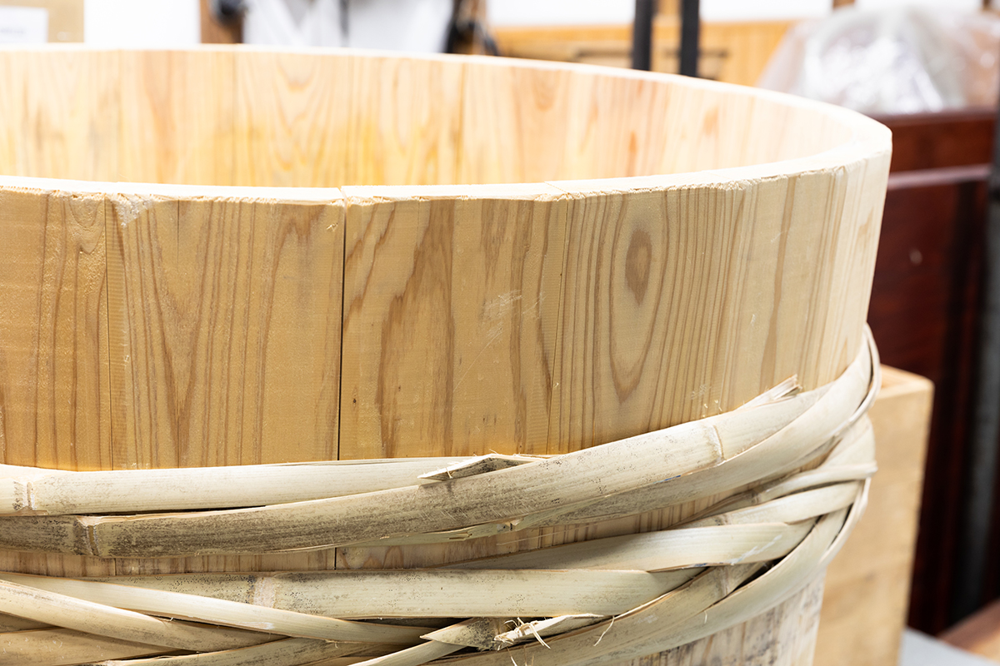
«Харугокоро» ценят не только в префектуре, но и в Токио с окрестностями, и по всей стране. Есть у Нисидэ и марка его имени, HIROHISA. Её он делает точно, под заранее задуманный вкус, из разных сортов риса и с разными дрожжами, и эта марка будет только у него одного.
«Хочу, чтобы традиция и новое шли рядом, как два колеса, и рассказывать о ремесле Комацу в Японии и за её пределами»
Хирохиса Нисидэ
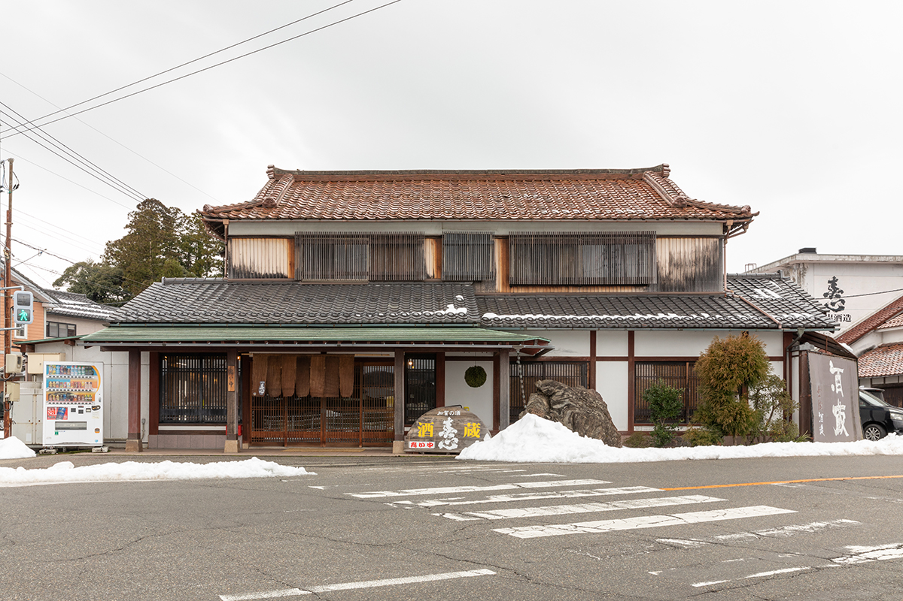
Nishide Shuzo
- Адрес
- префектура Исикава, Комацу, Симоавадзу-мати, Ро 2
- Телефон
- +81 761-44-8188
- Часы работы
- магазин 9:00–16:00, по субботам работает кафе «Гурури»
- Выходные
- четверг, воскресенье
- Цены / Вход
- экскурсия по сакэварне по предварительной записи
- Сайт
- nishidesake.com
Фото: Масааки Миядзава, Норихито Судзуки.